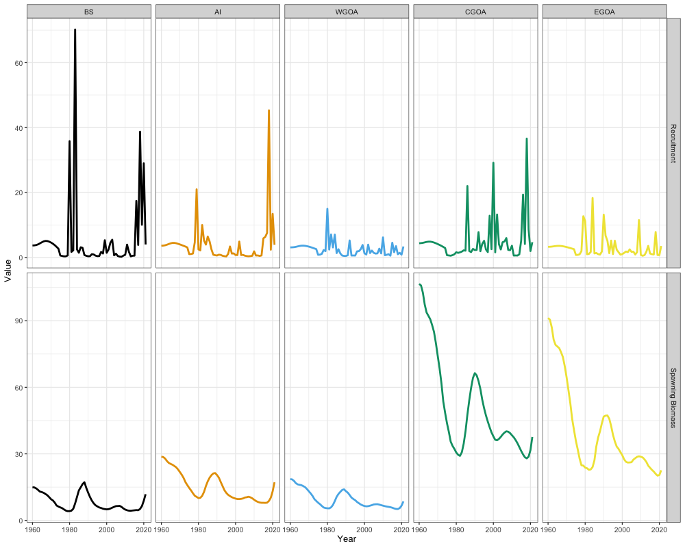

Case Study: Alaska Sablefish (Spatial)
g_spatial_sablefish_case_study.RmdOverview
This case study sets up a five-region spatial assessment for Alaska sablefish. Where the single region case study bridges an existing operational model, this one has no operational counterpart: it is a demonstration of what the spatial machinery does, so the emphasis is on the equations that only appear once and on reading the resulting regional trajectories.
| Dimension | Value |
|---|---|
| Regions | 5 (BS, AI, WGOA, CGOA, EGOA) |
| Years | 1960–2021 |
| Ages | 2–31 (30 age classes) |
| Sexes | 2 (female, male) |
| Fishery fleets | 2 (fixed gear, trawl), operating in all regions |
| Survey fleets | 2 (domestic longline, cooperative Japanese longline) |
| Tagging | Longline survey releases, fixed-gear recoveries |
Three things distinguish this from the panmictic model, and each carries its own block of equations below: fish move between regions, recruitment is apportioned among regions from a single global parameter, and tag releases and recoveries inform the movement rates that the age and length compositions alone cannot.
The domestic longline survey operates annually in the Gulf of Alaska
and biennially across the Bering Sea and Aleutian Islands. Everything
the case study needs ships with the package in
mlt_rg_sable_data, and the figures below are produced by
dev/make_sporc_obj_figs/make_spatial_sablefish_figs.R.
Model dimensions
input_list <- Setup_Mod_Dim(
years = 1:length(dat$years),
ages = 1:length(dat$ages),
lens = dat$lens,
n_regions = dat$n_regions,
n_sexes = dat$n_sexes,
n_fish_fleets = dat$n_fish_fleets,
n_srv_fleets = dat$n_srv_fleets,
n_pop = dat$n_pop,
verbose = TRUE
)Spatial population dynamics
The seasonal transition of the population is where the spatial model
departs from the panmictic one. Numbers at age are carried across a
season by an operator that combines movement with survival. With a
single season, movement applied first (move_timing = 0, the
default), that operator is
and the population advances as
where is the length- vector of numbers across regions and is the row-stochastic movement matrix. Because movement precedes mortality here, fish are caught where they end up rather than where they started, and the region-local Baranov equation applies to the post-movement distribution.
Total mortality is region specific, since fishing mortality is estimated separately in each region:
This is the reason
and
do not commute and the ordering has to be declared. When
happens to be constant across regions the three move_timing
options coincide exactly.
Recruitment and regional apportionment
Recruitment follows a mean-recruitment parameterisation with no stock recruit relationship, and a single global parameter is apportioned among regions:
The apportionment vector is estimated through a multinomial logit so that it stays on the simplex, with the first region as the reference:
Apportionment parameters are weakly identified, because regional recruitment, regional fishing mortality and movement can trade off against one another to produce nearly the same regional abundances. A Dirichlet prior regularises them:
with in every region. A symmetric with has its mode at , so this is a prior centred on equal recruitment across regions, informative rather than vague. The concentration behaves as the number of prior pseudo-observations, which is what to adjust if the prior is fighting the data. Setting would instead be uniform over the simplex and contribute nothing to the objective.
Initial age deviations are shared across regions
(InitDevs_spec = "est_shared_r") while recruitment
deviations remain region specific. Estimating both freely leaves the
initial condition badly underdetermined, since there is no data before
the first model year to separate a regional difference in the initial
age structure from a regional difference in early recruitment.
input_list <- Setup_Mod_Rec(
input_list = input_list,
rec_model = "mean_rec",
do_rec_bias_ramp = 0,
sigmaR_switch = 16,
dont_est_recdev_last = 1,
sigmaR_spec = "fix",
# initial deviations shared across regions; recruitment deviations are not
InitDevs_spec = "est_shared_r",
ln_sigmaR = array(log(c(0.4, 1.2)), dim = c(2, input_list$data$n_pop, input_list$data$n_regions)),
ln_global_R0 = log(20),
# Dirichlet prior on the apportionment vector; alpha = 3 everywhere puts the
# mode at equal recruitment with a concentration of 10 pseudo-observations
use_rec_region_prop_prior = 1,
rec_region_prop_prior = data.frame(pop = 1, alpha = I(list(rep(3, input_list$data$n_regions)))),
rec_region_prop_pars = array(c(0.2, 0.2, 0.2, 0.2), dim = c(input_list$data$n_pop, input_list$data$n_regions - 1))
)Biological dynamics
Natural mortality is fixed at a single sex-invariant value. Spatial models are heavily parameterised and is poorly identified once movement is also being estimated, since both remove fish from a region, so fixing it removes a confounding that the data cannot resolve.
input_list <- Setup_Mod_Biologicals(
input_list = input_list,
WAA = dat$WAA,
MatAA = dat$MatAA,
AgeingError = dat$AgeingError,
fit_lengths = 1,
SizeAgeTrans = dat$SizeAgeTrans,
M_spec = "fix",
Fixed_natmort = array(0.104884, dim = c(dat$n_pop, dat$n_regions, n_yrs, n_ages, dat$n_sexes))
)Movement
Movement is an unstructured discrete-time Markov process. The fraction of fish moving from region to region is estimated on a multinomial logit scale, which guarantees each row of is non-negative and sums to one:
giving free parameters per stratum. With five regions that is 20 parameters for every distinct combination of year, season, age and sex, so blocking is essential. This application estimates three age blocks and holds movement constant across years and sexes:
which is 60 movement parameters in total. The blocks are chosen to separate juveniles, maturing fish, and adults, matching the observation that sablefish disperse eastward as juveniles and become more resident with age.
Recruits are not allowed to move. Recruitment apportionment and first-year movement are severely confounded, since both determine where age-1 fish are found, and allowing both leaves the pair unidentified.
A Dirichlet prior is placed on each row of the movement matrix:
with throughout. The same caution applies as for the recruitment apportionment: a symmetric is centred on equal movement to every region, which for a residency-dominated stock is a strong assumption, not a vague one. It is used here to keep the estimates away from the boundaries of the simplex, where the multinomial logit becomes numerically awkward. To target a particular movement vector at a chosen strength instead, set .
The prior is expanded over every combination of origin region,
representative age (one per age block), and sex. Wrapping the
list in I() keeps expand.grid from splitting
it across rows.
Movement_prior <- expand.grid(
pop = 1,
region_from = 1:5,
year = 1, # single block, so the first year stands for all
seas = 1,
age = c(6, 7, 16), # one representative age per age block
sex = 1,
alpha = I(list(rep(3, 5)))
)
input_list <- Setup_Mod_Movement(
input_list = input_list,
# ages 1-6, 7-15, 16-30
Movement_ageblk_spec = list(c(1:6), c(7:15), c(16:30)),
Movement_yearblk_spec = "constant",
Movement_sexblk_spec = "constant",
# recruits moving is confounded with recruitment apportionment
do_recruits_move = 0,
use_fixed_movement = 0,
Use_Movement_Prior = 1,
Movement_prior = Movement_prior
)Tagging
Tag cohorts are indexed by the combination of release region, release year and release season, and follow a Brownie attrition framework. Immediately after release a cohort is decremented by an initial tagging mortality,
and thereafter advances through the same seasonal operator as the population, but evaluated with a tag-specific total mortality:
Three terms here do not appear in the population’s . The first is , the chronic tag shedding rate. The second is , the fraction of the season the cohort was actually at liberty, which equals in the release season and one thereafter. It multiplies every mortality component rather than the total, so that stays a genuine fraction of deaths. The third is the restriction of the sum to , the fleets that actually report tags, which here is the fixed-gear fleet only. Restricting the sum keeps the trawl fleet from influencing reporting rates and movement through data it contributes nothing to.
Recaptures follow a modified Baranov equation with a fleet-specific reporting rate :
Fitting is release conditioned with a multinomial likelihood, meaning both the recaptured and the non-recaptured state are fit. Proportions are taken relative to the number released in the cohort,
and the two are concatenated into a single vector before the multinomial is evaluated. Including the non-recapture cell is what makes the tag data informative about total mortality rather than only about the relative distribution of recoveries across regions.
Several settings control cost and identifiability rather than structure:
- Maximum tag liberty of 15 years. Cohorts stop being tracked after 15 years. Tag cohorts are release events, not release groups, so this bound is the dominant driver of how long the model takes to build.
- A two-year mixing period. Recaptures are not fit until the year after release, since newly released fish have not mixed with the population and would otherwise be read as evidence of extreme residency.
- Releases at . Tagging happens midway through the year, and movement does not occur within the release year.
- Initial tagging mortality and shedding fixed. Both are confounded with natural mortality, which is itself already fixed.
- Reporting rates shared across regions, estimated in two time blocks, under a symmetric beta prior with that penalises the extremes of without asserting a central value.
tag_prior <- data.frame(
region = 1,
block = c(1, 2),
fleet = 1,
mu = NA, # symmetric beta needs no mean
sd = 5, # larger values penalize the 0/1 extremes less
type = 0
)
input_list <- Setup_Mod_Tagging(
input_list = input_list,
use_conv_fish_tagging = c(1, 0), # fixed gear reports tags; trawl does not
conv_tag_max_liberty = 15,
conv_tag_release_indicator = dat$conv_tag_release_indicator,
conv_tagged_fish = dat$conv_tagged_fish,
obs_conv_tag_fish_recap = dat$obs_conv_tag_fish_recap,
conv_fish_tag_like = "Multinomial_Release",
conv_tag_mixing_period = 2, # don't fit until release year + 1
conv_tag_t_tagging = 0.5,
use_conv_tag_fishrep_prior = 1,
conv_tag_fishrep_prior = tag_prior,
conv_tag_age_pool = as.list(1:30),
conv_tag_sex_pool = list(c(1:2)),
# confounded with natural mortality, which is itself fixed
init_conv_tag_mort_spec = "fix",
conv_tag_shed_spec = "fix",
conv_tagrep_spec = "est_shared_r_f",
conv_tag_fish_reporting_blocks = c(
apply(expand.grid(1:input_list$data$n_regions, 1:input_list$data$n_fish_fleets), 1, function(x)
paste0("Block_1_Year_1-35_Region_", x[1], "_Fleet_", x[2])),
apply(expand.grid(1:input_list$data$n_regions, 1:input_list$data$n_fish_fleets), 1, function(x)
paste0("Block_2_Year_36-terminal_Region_", x[1], "_Fleet_", x[2]))
),
conv_fish_tag_attr = 'p_a_s',
ln_init_conv_tag_mort = log(0.1),
ln_conv_tag_shed = log(0.02),
ln_conv_fish_tag_theta = log(0.5),
conv_tag_fish_reporting_pars = array(log(0.2 / (1 - 0.2)),
dim = c(input_list$data$n_regions, 2, input_list$data$n_fish_fleets))
)Catch and fishing mortality
Fishing mortality is estimated separately in each region, which is what makes region specific and the movement ordering consequential. Catch is fit lognormally with a small fixed standard deviation, so observed catch is matched closely and the parameters are free to be informed by the other data.
input_list <- Setup_Mod_Catch_and_F(
input_list = input_list,
ObsCatch = dat$ObsCatch,
UseCatch = dat$UseCatch,
Use_F_pen = 1,
sigmaC_spec = 'fix',
ln_sigmaC = array(log(0.05), dim = c(input_list$data$n_regions, n_yrs,
input_list$data$n_seas,
input_list$data$n_fish_fleets))
)
# ln_F_mean cannot be passed through ... because R partially matches the name to
# the ln_F_mean_spec formal, so the starting value is assigned post-hoc.
input_list$par$ln_F_mean[] <- -2Indices and compositions
No fishery indices are used. The composition structure is where the
spatial model differs most visibly from the panmictic one: compositions
are spltRjntS, split by region and joint across
sexes. Each region’s compositions sum to one across both sexes
together,
so the data carry information about the sex ratio within a region but not about the relative abundance between regions. That between-region information is deliberately left to the indices and the tagging data. Fitting compositions that were normalised across regions instead would let composition data speak to regional apportionment, which is precisely the quantity the tags are there to inform.
input_list <- Setup_Mod_FishIdx_and_Comps(
input_list = input_list,
ObsFishIdx = dat$ObsFishIdx,
ObsFishIdx_SE = dat$ObsFishIdx_SE,
UseFishIdx = dat$UseFishIdx,
ObsFishAgeComps = dat$ObsFishAgeComps,
UseFishAgeComps = dat$UseFishAgeComps,
ISS_FishAgeComps = dat$ISS_FishAgeComps,
ObsFishLenComps = dat$ObsFishLenComps,
UseFishLenComps = dat$UseFishLenComps,
ISS_FishLenComps = dat$ISS_FishLenComps,
fish_idx_type = c("none", "none"),
FishAgeComps_LikeType = c("Multinomial", "none"),
FishLenComps_LikeType = c("Multinomial", "Multinomial"),
# split by region, joint across sexes
FishAgeComps_Type = c("spltRjntS_Year_1-terminal_Fleet_1",
"none_Year_1-terminal_Fleet_2"),
FishLenComps_Type = c("spltRjntS_Year_1-terminal_Fleet_1",
"spltRjntS_Year_1-terminal_Fleet_2")
)
input_list <- Setup_Mod_SrvIdx_and_Comps(
input_list = input_list,
ObsSrvIdx = dat$ObsSrvIdx,
ObsSrvIdx_SE = dat$ObsSrvIdx_SE,
UseSrvIdx = dat$UseSrvIdx,
ObsSrvAgeComps = dat$ObsSrvAgeComps,
ISS_SrvAgeComps = dat$ISS_SrvAgeComps,
UseSrvAgeComps = dat$UseSrvAgeComps,
ObsSrvLenComps = dat$ObsSrvLenComps,
UseSrvLenComps = dat$UseSrvLenComps,
ISS_SrvLenComps = dat$ISS_SrvLenComps,
srv_idx_type = c("abd", "abd"),
SrvAgeComps_LikeType = c("Multinomial", "Multinomial"),
SrvLenComps_LikeType = c("none", "none"),
SrvAgeComps_Type = c("spltRjntS_Year_1-terminal_Fleet_1",
"spltRjntS_Year_1-terminal_Fleet_2"),
SrvLenComps_Type = c("none_Year_1-terminal_Fleet_1",
"none_Year_1-terminal_Fleet_2"),
t_srv = array(0.5, dim = c(input_list$data$n_regions,
input_list$data$n_seas,
input_list$data$n_srv_fleets))
)Selectivity and catchability
All selectivity and catchability processes are spatially invariant
(est_shared_r). This is the central simplifying assumption
of the application: regional differences in the compositions are
attributed to differences in the underlying age structure, which
movement and recruitment apportionment produce, rather than to regional
differences in gear. Allowing both would leave them confounded.
The fixed-gear fleet is logistic and the trawl fleet dome-shaped gamma, as in the panmictic model, but with a single time block rather than three. Both survey fleets are logistic.
Lognormal priors on the selectivity parameters keep them in a
plausible range. The prior rows must match the parameter mapping
exactly: a prior placed on a parameter that is mapped off contributes a
constant to the objective and a gradient to nothing, so the
filter calls below remove rows for parameters that are
shared rather than estimated.
sex_par <- expand.grid(sex = 1:2, par = 1:2)
fleet_blocks <- data.frame(fleet = c(1, 2), block = 1)
# Rows must match the mapping below: drop priors for parameters that are shared
# rather than estimated. par 1 = a50 / bmax, par 2 = delta / gamma.
fish_selex_structure <- merge(fleet_blocks, sex_par) %>%
dplyr::filter(!(fleet == 1 & block == 1 & sex == 2 & par == 2)) %>%
dplyr::filter(!(fleet == 2 & block == 1 & sex == 2 & par == 1))
fish_selex_prior <- cbind(region = 1, fish_selex_structure, mu = 2, sd = 3)
input_list <- Setup_Mod_Fishsel_and_Q(
input_list = input_list,
cont_tv_fish_sel = c("none_Fleet_1", "none_Fleet_2"),
fish_sel_blocks = c("none_Fleet_1", "none_Fleet_2"),
fish_sel_model = c("logist1_Fleet_1", "gamma_Fleet_2"),
fish_q_blocks = c("none_Fleet_1", "none_Fleet_2"),
# spatially-invariant selectivity
fish_fixed_sel_pars = c("est_shared_r", "est_shared_r"),
fish_q_spec = c("fix", "fix"),
Use_fish_selex_prior = 1,
fish_selex_prior = fish_selex_prior
)
map_fish_fixed <- array(input_list$map$fish_fixed_sel_pars, dim = dim(input_list$par$fish_fixed_sel_pars))
map_fish_fixed[,2,1,2,1] <- map_fish_fixed[,2,1,1,1] # share fixed-gear delta across sexes
map_fish_fixed[,1,1,2,2] <- map_fish_fixed[,1,1,1,2] # share trawl bmax across sexes
input_list$map$fish_fixed_sel_pars <- factor(map_fish_fixed)
sex_par <- expand.grid(sex = 1:2, par = 1:2)
fleet_blocks <- data.frame(fleet = c(1, 2), block = c(1, 1))
srv_selex_prior <- cbind(region = 1, merge(fleet_blocks, sex_par), mu = 1, sd = 5) %>%
dplyr::filter(!(fleet == 2 & par == 2 & sex == 2)) %>%
dplyr::mutate(mu = ifelse(fleet == 2, 2, mu),
sd = ifelse(fleet == 2, 3, sd))
input_list <- Setup_Mod_Srvsel_and_Q(
input_list = input_list,
cont_tv_srv_sel = c("none_Fleet_1", "none_Fleet_2"),
srv_sel_blocks = c("none_Fleet_1", "none_Fleet_2"),
srv_sel_model = c("logist1_Fleet_1", "logist1_Fleet_2"),
srv_q_blocks = c("none_Fleet_1", "none_Fleet_2"),
srv_fixed_sel_pars_spec = c("est_shared_r", "est_shared_r"),
# spatially-invariant catchability
srv_q_spec = c("est_shared_r", "est_shared_r"),
Use_srv_selex_prior = 1,
srv_selex_prior = srv_selex_prior
)
map_srv_fixed <- array(input_list$map$srv_fixed_sel_pars, dim = dim(input_list$par$srv_fixed_sel_pars))
map_srv_fixed[,2,1,2,2] <- map_srv_fixed[,2,1,1,2] # share JP longline delta across sexes
input_list$map$srv_fixed_sel_pars <- factor(map_srv_fixed)Weighting and input sample sizes
All data weights are one, except tagging, which is down-weighted by half. Tag data comprise a very large number of individual cells, so their nominal likelihood contribution can dominate the objective long before their information content justifies it.
Input sample sizes are set so that each composition data source sums to roughly 100 across all regions combined, rather than 100 per region. Splitting compositions by region multiplies the number of cells by without adding any new sampling, so leaving per-region sample sizes at their panmictic values would overstate the composition information fivefold.
comp_wt <- function(n_fleets) {
array(1, dim = c(input_list$data$n_regions, n_yrs, input_list$data$n_seas,
input_list$data$n_sexes, n_fleets))
}
input_list <- Setup_Mod_Weighting(
input_list = input_list,
Wt_Catch = 1,
Wt_FishIdx = 1,
Wt_SrvIdx = 1,
Wt_Rec = 1,
Wt_F = 1,
Wt_Tagging = 0.5,
Wt_FishAgeComps = comp_wt(input_list$data$n_fish_fleets),
Wt_FishLenComps = comp_wt(input_list$data$n_fish_fleets),
Wt_SrvAgeComps = comp_wt(input_list$data$n_srv_fleets),
Wt_SrvLenComps = comp_wt(input_list$data$n_srv_fleets)
)
# Sample sizes are set so each source totals ~100 ACROSS regions, not per region
input_list$data$ISS_SrvAgeComps[] <- 20
input_list$data$ISS_FishAgeComps[1,,,,] <- 25 # BS
input_list$data$ISS_FishAgeComps[2,,,,] <- 20 # AI
input_list$data$ISS_FishAgeComps[3,,,,] <- 14 # WGOA
input_list$data$ISS_FishAgeComps[4,,,,] <- 18 # CGOA
input_list$data$ISS_FishAgeComps[5,,,,] <- 18 # EGOA
input_list$data$ISS_FishLenComps[1,,,,] <- 12 # BS
input_list$data$ISS_FishLenComps[2,,,,] <- 12 # AI
input_list$data$ISS_FishLenComps[3,,,,] <- 7 # WGOA
input_list$data$ISS_FishLenComps[4,,,,] <- 7 # CGOA
input_list$data$ISS_FishLenComps[5,,,,] <- 7 # EGOAFitting
Spatial models with tagging are expensive to build. Most of the
runtime is the MakeADFun tape construction rather than the
optimization, and the cost scales with the number of tag cohorts times
the maximum tag liberty, so this takes considerably longer than the
panmictic model.
data <- input_list$data
parameters <- input_list$par
mapping <- input_list$map
sabie_rtmb_model <- fit_model(data, parameters, mapping,
random = NULL, newton_loops = 5, silent = FALSE)
sabie_rtmb_model$sd_rep <- RTMB::sdreport(sabie_rtmb_model)Results
Spawning biomass and recruitment are now dimensioned , so they are melted to long format rather than coerced to a vector.
ts_df <- rbind(
reshape2::melt(sabie_rtmb_model$rep$SSB) %>% dplyr::mutate(Par = "Spawning Biomass"),
reshape2::melt(sabie_rtmb_model$rep$Rec) %>% dplyr::mutate(Par = "Recruitment")
) %>%
dplyr::rename(Pop = Var1, Region = Var2, Year = Var3) %>%
dplyr::mutate(
Region = factor(c('BS', 'AI', 'WGOA', 'CGOA', 'EGOA')[Region],
levels = c("BS", "AI", "WGOA", "CGOA", "EGOA")),
Year = Year + 1959
)
ggplot(ts_df, aes(x = Year, y = value, color = Region)) +
geom_line(linewidth = 1.3) +
facet_grid(Par ~ Region, scales = "free_y") +
ggthemes::scale_color_colorblind() +
labs(y = "Value") +
theme_bw(base_size = 13) +
theme(legend.position = 'none')
Reading the regional trajectories, spawning biomass is highest in the CGOA, followed by the EGOA, with the three western regions at broadly comparable and lower levels. Recruitment shows a different ordering: the western regions (BS and AI) together with the CGOA carry the highest levels. That mismatch between where fish recruit and where spawning biomass accumulates is likely reflecting eastward movement, and it is the pattern the age-blocked movement matrix and the tag recoveries are jointly resolving.